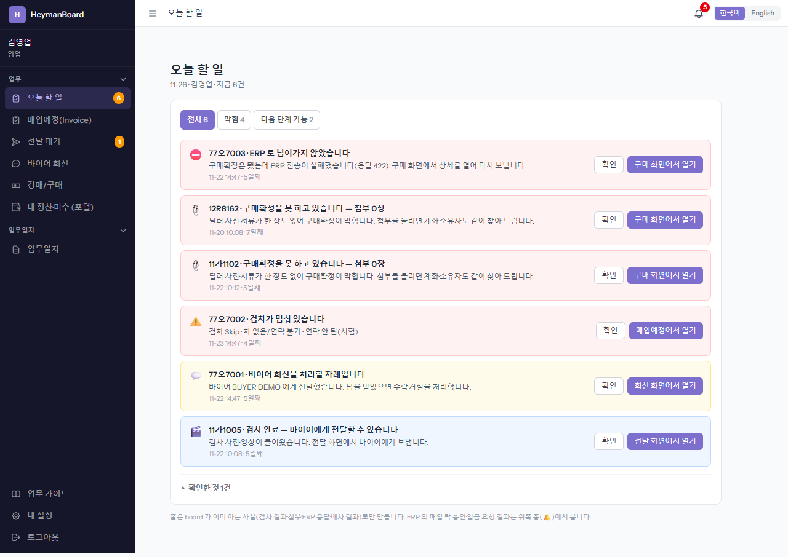
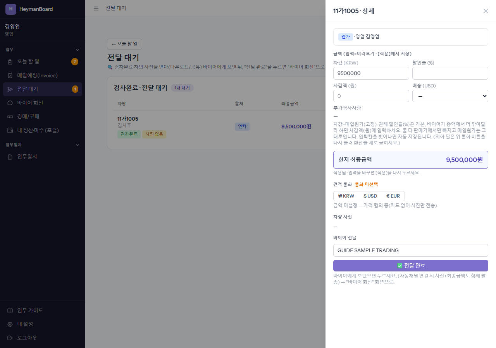
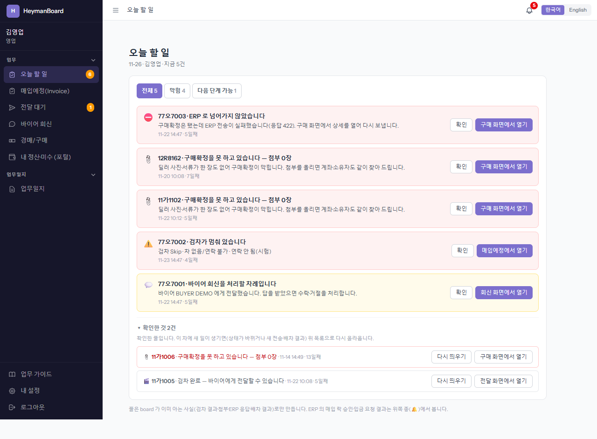
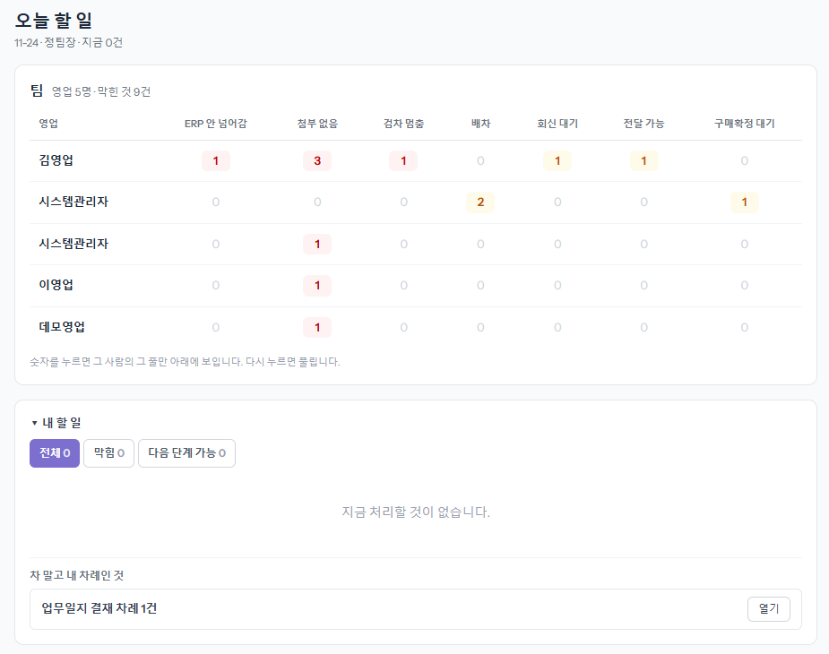

로그인하면 가장 먼저 뜨는 화면입니다. 내 차 가운데 지금 내가 손대야 움직이는 것만 한 줄씩 모아 보여 주고, 줄의 버튼을 누르면 평소 쓰는 그 화면이 그 차 상세 창이 열린 채로 뜹니다.
화면·버튼은 하나도 바뀌지 않았습니다. 찾아다니는 수고만 줄인 것입니다.
① 영업 — 내 할 일
1단계
로그인하면 「오늘 할 일」이 뜹니다 — 위에서부터 처리합니다
사이드바 맨 위 「오늘 할 일」 옆 숫자가 지금 남은 줄 수입니다. 줄은 급한 순서로 놓입니다 — 빨강(내가 손대지 않으면 멈춰 있는 것) → 노랑(답을 받아 처리할 차례) → 파랑(다음 단계로 보낼 수 있는 것).

- ERP 로 넘어가지 않았습니다 — 구매확정은 했는데 ERP 전송이 실패했거나(재고 상한 초과 포함) 30분이 지나도 보낸 기록이 없는 차. 「경매/구매」에서 열어 다시 보냅니다.
- 구매확정을 못 하고 있습니다 — 첨부 0장 — 바이어가 수락했는데 딜러 사진·서류가 없어 확정이 막힌 차.
- 구매확정할 차례입니다 — 첨부까지 있고 확정만 남은 차.
- 검차가 멈춰 있습니다 — 검차원이 Skip(사유)했거나 지역이 비어 배정이 안 되는 차. 매입예정 상세 창에서 재검차 요청·지역 입력을 합니다.
- 바이어 회신을 처리할 차례입니다 — 바이어에게 전달한 차. 답을 받았으면 「바이어 회신」에서 수락·거절합니다.
- 검차 완료 — 바이어에게 전달할 수 있습니다 — 검차 사진·영상이 들어온 차.
- 배차가 거절됐습니다 / 배차완료 — 매입잔금 요청을 보낼 차례입니다 — 최근 14일 탁송 결과. 매입예정 상세 창 「탁송 배차」 탭이 열립니다.
위의 칩 「막힘」·「다음 단계 가능」으로 거를 수 있습니다. 줄 아래 회색 글씨는 그 단계에 들어온 시각과 며칠째인지입니다.
2단계
줄의 버튼을 누르면 평소 화면이 그 차를 연 채로 뜹니다
예를 들어 [전달 화면에서 열기]를 누르면 「전달 대기」 화면이 열리고 그 차 상세 창이 바로 열려 있습니다. 처리는 평소처럼 그 창에서 합니다. 위 [← 오늘 할 일]을 누르면 돌아갑니다.

처리하면 그 줄은 「오늘 할 일」에서 사라집니다(다음 단계 줄로 바뀌기도 합니다). 이미 다른 단계로 넘어간 차를 누르면 상세 창 없이 그 화면만 열립니다.
3단계
지금 당장 못 하는 줄은 [확인]으로 내려 둡니다
딜러 서류를 기다리는 중처럼 지금은 손댈 수 없는 줄은 줄 오른쪽 [확인]을 누릅니다. 그 줄은 내 목록과 사이드바 숫자에서 빠지고, 목록 아래 「확인한 것 N건」으로 내려갑니다.

- 그 차에 새 일이 생기면 바뀐 내용으로 다시 올라옵니다 — 단계가 넘어가거나, ERP 전송 결과가 새로 오거나, 새 배차 결과가 오거나, 첨부가 늘어난 경우.
- 아무 일도 없으면 계속 내려가 있습니다. 「전달 가능」처럼 내가 움직여야 끝나는 줄은 잊지 않게 가끔 「확인한 것」을 펼쳐 봅니다.
- 잘못 눌렀으면 「확인한 것」을 펼쳐 [다시 띄우기]를 누릅니다. 막힌 줄(빨강)은 거기서도 빨간 글씨로 보입니다.
- [확인]은 내 화면에서만 내립니다. 관리자의 팀 표 숫자에는 그대로 남습니다.
② 관리·업무관리자 — 팀 표
4단계
위의 팀 표에서 누가 어디서 막혔는지 봅니다
관리·업무관리자 이상은 「오늘 할 일」 맨 위에 팀 표가 붙습니다 — 영업마다 칸별(ERP 안 넘어감·첨부 없음·검차 멈춤·배차·회신 대기·전달 가능·구매확정 대기) 줄 수. 숫자를 누르면 아래 목록이 그 사람의 그 칸 줄만 보여 주고, 다시 누르거나 [전체 보기]를 누르면 풀립니다. 영업이 [확인]으로 내려 둔 줄도 팀 표에는 그대로 셉니다.

팀 표 아래 「내 할 일」은 내가 직접 등록한 차의 줄입니다. 그 아래 「차 말고 내 차례인 것」에는 처리할 클레임·업무일지 결재 차례가 있으면 나옵니다.
알아 둘 것
- 보이는 차는 평소와 같습니다 — 영업은 본인 차, 관리는 본인 + 포털을 공유해 준 영업의 차, 업무관리자 이상은 전체.
- ERP 의 매입 락 승인 결과·입금 요청 확인/거절은 이 화면이 아니라 위쪽 종(🔔)에서 봅니다.
- 현지확인·경매 역할은 첫 화면이 종전 그대로입니다.
- 사이드바 숫자는 30초마다 다시 셉니다. 방금 처리하거나 [확인]한 줄이 숫자에 잠깐 남아 있을 수 있습니다.